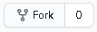
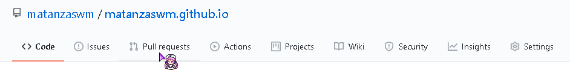

Website Help
For those interested in helping the
Webmaster in updating, organizing,
and coding the website
Any experience in the following could be useful but are not necessary:
Programs such as the following could also be useful:
Information
Technically, there is no need for any experience in making/editing this website. More specifically, the only experience needed is general problem solving and common sense. This inlcudes figuring out why certain functions don't work, etc.
For the most part, editing a base HTML5 page is very easy to pick up. There are generic and element html pages to assist people within the Github Repository. Adding in scripts using javaScript is situational. CSS base can be found within the Github Repository as well. If having trouble finding the specific code line locations, inspect element can help you identify which line in the main.css file you need. Dividers are also present in most .html pages to help find content, sidebars, etc.
Please either clone the repository or download as a zip file as shown on the right. This allows you to move all of the files used to make the website locally to your client. You are then able to open index.html using any source code editor such as Sublime Text or Brackets and edit directly! Since the current webmaster (2018-2020) got lazy, you will find all static pages of the website on the main folder (and it might get messy).
As a warning, since each .html page is separate, make sure all universally shared aspects of a page is cloned on each file. This means that if, for example, you change the text on the menu bar for only the help.html file, if you were to open directory.html, the menu bar text will be the original and not be changed.
If you think this is a pain, it sure is. There is probably a better way of linking each page, but since we are working with static webpages, it is slightly limited. Also, the webmaster is lazy.
Editing
There are multiple ways to send me any additions you've made to the website, for example emailing. However, if you are comfortable with Github, you can fork the repository and then create a pull request which will allow me to compare any additions or edits to the code you have made, allowing me to see what you'd like to add. I can then commit the changes (publish). 
Extras
Remember, for file paths outside of the folder you're working with, use
../example.html
The list of fa-icons can be found within assets/webfonts. Browsing through the .svg files will show you the specific class name used.
Downloads
Sublime Text (Recommended)
Brackets
Contributions
I would personally like to thank these people for their contributions in helping with the website.
| Name | Description |
|---|---|